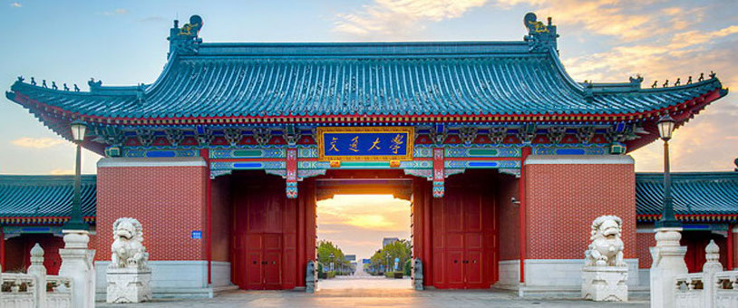

|  | We are entering new era of the Cosmic Microwave Background research, aiming to probe the Primordial Gravitational Waves (PGWs) originated from the very early Universe. Recently, China has launched the Ali CMB Polarization Telescope (AliCPT) in Tibetan Plateau to measure CMB B-mode polarization in northern hemisphere. This symposium brings together experimental and theoretical scientists that are interested in contributing to this project. The program consists of plenary sessions with presentations covering, but not being limited to, the following topics:
* Foreground removal & novel techniques in CMB signal extraction;
* Simulation & computational development for the forthcoming data sets;
* Early universe theories & cosmological implications;
* Systematic effects & survey strategy;
* System hardware design & software design.
The aim of this symposium is to foster discussions and to exchange ideas among active researchers in this field.
If you have any questions, please contact
Le Zhang (Le Zhang_at_sjtu.edu.cn)
Pengjie Zhang (Pengjie Zhang_at_sjtu.edu.cn)
There is no registration fee, but advanced registration for the symposium is required. Thanks to support from the NSFC.
Formal Registration and Abstract Submission
Registration deadline: August 23, 2018
Abstract submission deadline: August 30, 2018
Only registered participants can submit abstracts. It is recommended that participants
register early in order for LOC to provide timely assistance (e.g. invitation letter for visa
and hotel reservation) if needed.
Key Dates and Schedule
Visa Information
Meeting Venue and Hotel Information
|